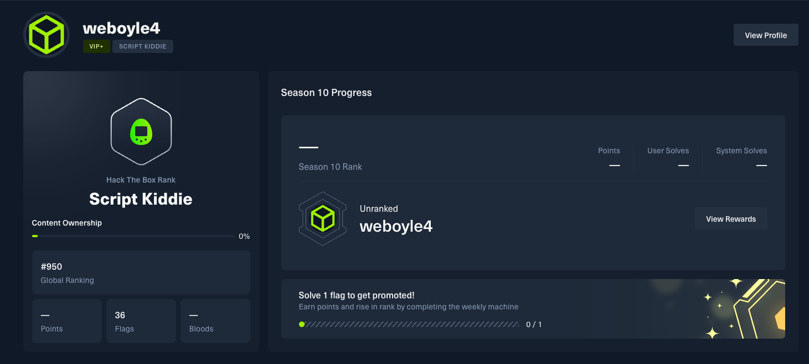

HackTheBox & Lab Environments
My technical development strategy involves a dual-track approach to security mastery. I leverage HackTheBox to stay at the forefront of modern penetration testing techniques and exploit development. Simultaneously, I maintain a high-availability Proxmox home lab where I engineer complex network simulations. This infrastructure allows me to bridge the gap between theoretical vulnerabilities and practical remediation by testing security controls across multiple virtualized subnets and operating systems.
